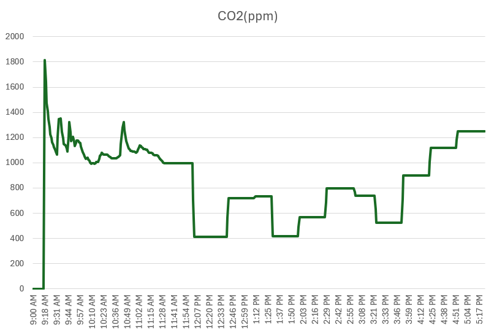

이산화탄소 농도와 집중력
선행 연구에 따르면, 이산화탄소 농도는 학생의 주의집중을 방해하고, 문제 풀이의 오답률을 높이며,
문제 풀이 속도를 지연시킵니다. 환기가 원활하여 이산화탄소 농도가 낮은 교실의 학생은 더 빠르고
정확하게 주의집중하고 반응하는 반면, 농도가 높은 교실의 학생은 집중력이 낮아지고 졸음을
느끼게 됩니다.
실제 측정 결과(7/9), 오전 9시 이후 학생들이 교실에 머무르는 동안 CO₂ 농도는 최고점인
약 1,800ppm까지 상승하였고, 이후 1,000~1,300ppm 사이의
고농도 상태를 유지하였습니다. 이는 학교시설 실내공기질 관리기준인 1,000ppm을 초과하는 수치로,
학생들의 주의집중력을 방해하고 졸음을 유발할 수 있는 수준입니다.
점심시간 전후인 11시 53분부터는 CO₂ 농도가 약 400ppm 수준으로 급격히 떨어졌으며,
점심시간이 끝난 13시 30분부터 학생들이 복귀하자 다시 약 720ppm까지 상승하였습니다.
이를 통해 학생들의 이동 패턴이 교실 내 CO₂ 농도 변화와 밀접한 상관관계가
있음을 확인할 수 있었습니다.
이산화탄소 농도를 바꾸는 요인들:
강수량과 습도 : 비나 눈이 강하게 내리면 대기 중의 이산화탄소가 물에 용해되어 대기 중 이산화탄소 농도가 낮아집니다.
풍속 : 풍속이 높을수록 대기 순환이 원활해져 이산화탄소의 농도가 일시적으로 낮아집니다.
기온과 일사량 : 햇볕이 적당한 날에는 식물의 광합성량이 증가하여 이산화탄소 농도가 낮아집니다. 반대로 흐린 날, 겨울철이 되면 광합성이 줄고 이산화탄소 농도가 올라갑니다.
실험 그래프 보기

배경 지식 및 세부 데이터 더 보기
이산화탄소(CO₂)는 실내 공간에 사람들이 모여서 생활할 경우 자연스럽게 농도가 상승합니다.
보통 400~500ppm 정도의 농도로 분포하지만, 실내의 경우 2,000ppm을 넘는 경우도 종종 발생합니다.
또한 이산화탄소 농도가 상승함에 따라 사람들이 느끼는 주관적 졸음 척도가 유의미하게
상승하였고, 뇌가 각성 상태에서 졸음 상태로 전환될 때 나타나는 지표 또한 증가하였습니다.
이를 바탕으로 이산화탄소의 농도는 졸음과 상관관계가 있음을 알 수 있습니다. 따라서 졸음이
계속 오는데 밀폐된 실내 공간에 오랫동안 있었다면 한번쯤 일어나서 환기를 시켜보는 것이
좋습니다.
실제 측정 결과를 살펴보면, 학교의 일과 시간표에 따른 학생들의 이동 패턴이 교실 내
이산화탄소 농도 변화에 영향을 미치고 있음이 확인되었습니다. 전체적으로 학생들이 밀집하는
수업 시간에는 CO₂ 농도가 상승하고, 학생들이 이동하는 쉬는 시간 및 식사 시간에는 CO₂
농도가 하강하는 상관관계를 보였습니다.
5교시가 끝난 후인 14시 29분경에는 학생들이 교실 밖으로 이동하면서 CO₂ 농도가 다시
400ppm 부근으로 떨어지는 현상이 나타났습니다. 이 결과를 바탕으로, 환기를 쉬는 시간에만
수행하기보다 수업 중간에도 환기를 시키면 학생들의 집중력 증가와 졸음 감소 효과를 기대할
수 있을 것으로 생각됩니다.